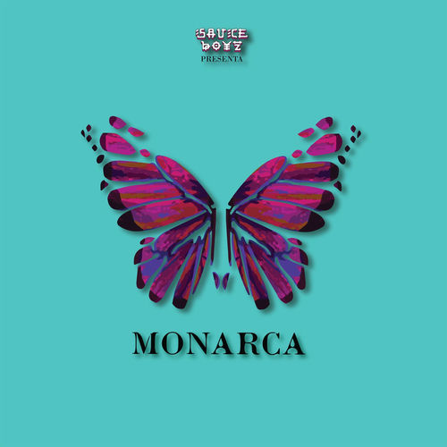
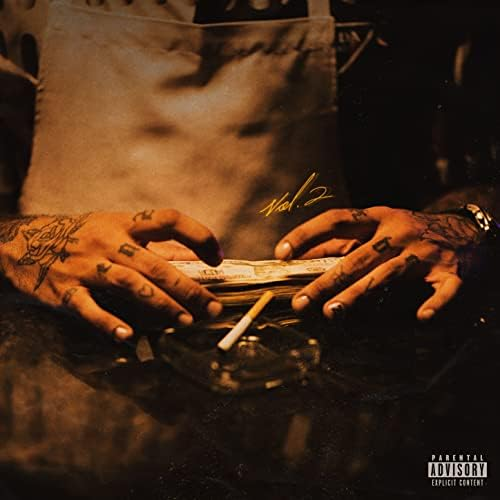
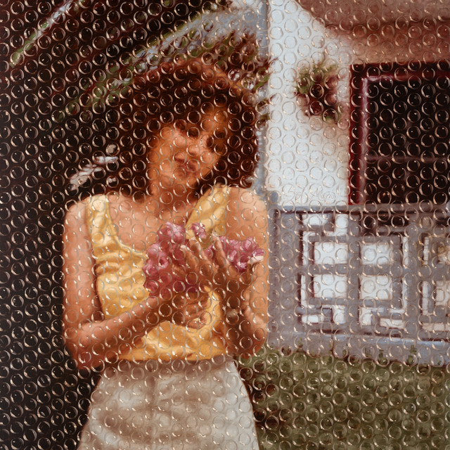

La discografía de Eladio Carrión es un viaje de evolución constante que redefine el trap latino a través de una lírica técnica y una versatilidad asombrosa. Desde sus inicios más crudos centrados en barras pesadas y punchlines de alto impacto, ha logrado transicionar hacia sonidos más melódicos como el R&B y el drill, sin perder nunca su esencia callejera.


